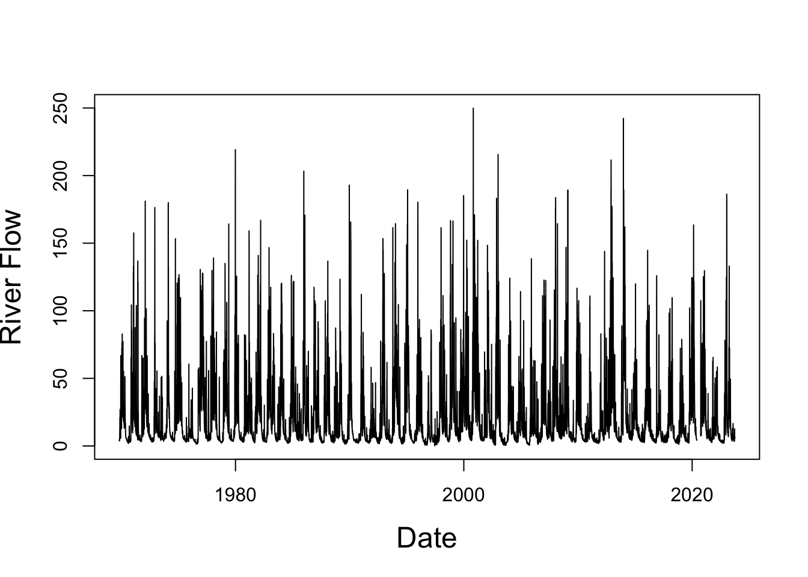
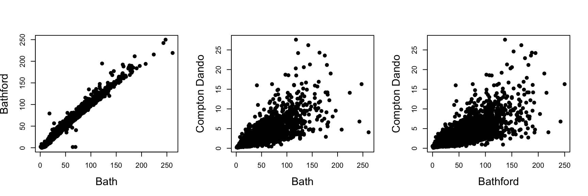

Data Wrangling
In practice, raw data (measurements, etc.) may be provided in a format that hampers its analysis. Common problems include:
Data types are incompatible with available R functions - data may, for instance, be imported as a set of characters, but we require numerical values for most R functions;
Variable names are uninformative - we do not want to always go back and look up what the individual variables represent;
We are only interested in a subset of the data - a study may have produced a lot of data, but we want to focus on a specific aspect.
Data wrangling is concerned with restructuring the raw data into a format more useful for the analysis. We also want to extract key information from the data, i.e, performing some data exploration.
In this chapter we will explore how we can perform such tasks in R. Most of the functions we will use are provided by the dplyr R package (and other R packages where appropriate). Let’s load the dplyr package,
When we import data into R, the data will usually be stored as a data frame, which corresponds to a matrix, where each column has a name. The dplyr package is particularly effective at working with this data format. To access the individual columns for the different variables in the data frame, we can use the $ sign, followed by the name of the column (you will see this syntax at multiple points).
Data cleaning
After loading the data, the first step is to check that variables have the correct data type and decide whether the variable names are suitable/informative. If the data type is incorrect, we should convert it, in particular if we want to apply R functions to the data. The most common conversion we will have to make is from the type character to the type numeric or date. In this section, we highlight some of the available R functions for converting and renaming variables, and illustrate their application using publicly available river flow data.
Converting characters into numerical values
When loading the data for a numerical variable into R, the individual values may be stored as strings/words. Possible reasons include, for instance, that the value 2345.34 is stored as “2,345.34” in the data file (see Problem Class 1) or that missing values are represented via a letter - once R fails to convert a single entry to a numerical value, the whole column (variable) is converted to type character. However, this data type is often not useful because only a few functions can work with it.
We will introduce the functions as.numeric() and case_when() that may be used to convert a character to a numerical value.
Example 1: Suppose we work with a data set where the letter “M” is used to indicate that an observation is missing. A toy example is provided in the data file “DataCleaningExample1.csv”. We load this data and use the function glimpse() in the dplyr package to print the data type and values:
Rows: 8
Columns: 1
$ Value <chr> "1.02", "0.98", "0.79", "M", "2.1", "15.1", "M", "4.2"We find that the values are stored as characters/words, as indicated by the data type being \(\mathrm{\texttt{<chr>}}\). In such a situation, we cannot use the mean() function to derive the average value - there is no average of a set of words:
mean( Example1$Value )Warning in mean.default(Example1$Value): argument is not numeric or logical:
returning NA[1] NAInstead, we have to first use the function as.numeric() to convert the words to numerical values
Example1$Value <- as.numeric( Example1$Value )Warning: NAs introduced by coercionglimpse( Example1 )Rows: 8
Columns: 1
$ Value <dbl> 1.02, 0.98, 0.79, NA, 2.10, 15.10, NA, 4.20We see that the data type has changed to \(\mathrm{\texttt{<dbl>}}\), which is one data type for numerical values. Further, the R output shows that all entries with the letter “M” were converted to \(\mathrm{\texttt{NA}}\) (not available) - this is R’s way to tell us that the conversion did not work or that a value is missing (which is exactly what we want here).
With the values converted to the correct type, we can now calculate their mean:
mean( Example1$Value, na.rm=TRUE ) # na.rm=TRUE to ignore the entries with NA[1] 4.031667Example 2: Suppose responses to a survey question were encoded as “Y” (“Yes”) or “N” (“No”) and we received the following data vector:
responses <- c("Y","Y","N","Y","N","Y","N","N","N","Y")Again, we cannot use \(\mathrm{\texttt{mean(responses)}}\) to derive the proportion of participants who answered with “Yes”, because the mean() function requires numerical or logical values.
One common approach to derive the proportion in practice is to encode the outcomes as numerical values to which the mean() function is then applied. The dplyr package provides the function case_when() which allows us to replace “Y” and “N” by 1 and 0 respectively:
We find that 50% of the participants answered the question with “Yes”. One strength of case_when() is that we can define as many cases as we need, there is no limit. The function can also be used to convert other types of data, and it is not limited to converting a character into a numerical value.
Remark 1: If you forget to specify a case in case_when(), the converted value for any unspecified case will be \(\mathrm{\texttt{NA}}\) by default. The default option can be changed and for our our example we could have also used
responses <- case_when( responses == "Y" ~ 1, .default = 0 )Remark 2: Be aware that case_when() considers the expressions sequentially (just as when you are using if, else if and else statements). The following pieces of code show an example where the result depends on the order of the conditions:
We see that all converted values are all equal to 1. Let’s see what happens when we change the order of the conditions:
This second result seems more intuitive. Consequently, we should proceed from the most specific to the most general condition when using case_when().
Converting characters into dates
In many studies we are provided with the time the data were observed. This information is often important in applications and we cannot simply ignore it. When loading variables representing dates into R, their values are often stored as strings, such as “01/10/2022”.
The R package lubridate provides a range of nice functions to convert data of type character into the data type date or date-time. For instance, to convert the character expressions “01/10/2022” and “15/10/2023”, we use the as_date() function,
Date[1:2], format: "2022-10-01" "2023-10-15"We see that the default output format for dates is year-month-day.
Remark 1: After converting values to date, we can extract the year and month using the functions year() and month() respectively. Let’s extract the year from the dates in date_converted:
year( date_converted )[1] 2022 2023Remark 2: We can also calculate the difference between dates. For instance, if we consider the two entries in the vector of converted dates, we find
date_converted[2] - date_converted[1]Time difference of 379 daysSo you can now use R to quickly calculate how many days there are left until the Easter break.
Changing variable names
We should avoid using uninformative (or very long) variable names. Let’s generate a data frame with two columns, where each column contains five samples from a standard normal distribution
set.seed( 2025 )
obs <- data.frame( "x"=rnorm(5, mean=0, sd=1), "y"=rnorm(5, mean=0, sd=1) )
obs x y
1 0.6207567 -0.16285434
2 0.0356414 0.39711189
3 0.7731545 -0.07998932
4 1.2724891 -0.34496518
5 0.3709754 0.70215136We may argue that the variable names x and y are uninformative and should be changed to Sample1 and Sample2 respectively. The function rename() in the dplyr R package allows us to do this:
obs <- rename( obs, "Sample1"=x, "Sample2"=y )
obs Sample1 Sample2
1 0.6207567 -0.16285434
2 0.0356414 0.39711189
3 0.7731545 -0.07998932
4 1.2724891 -0.34496518
5 0.3709754 0.70215136Example: Loading and cleaning NRFA river flow data
The National River Flow Archive (www.nrfa.ceh.ac.uk) provides data for hundreds of sites (gauges) across the UK. We want to analyze daily river flow data for the River Avon at Bathford. The data are available in the file “Bathford River Flow.csv”.
When looking at the data file, we identify two aspects that need to be taken into account when loading the data into R
The first 20 lines are data descriptors (so called meta data), while the remaining lines contain the actual data: dates and river flow measurements.
The letter “M” appears in the third column whenever the river flow measurement is missing in later years.
To ignore the first 20 lines and avoid importing the data file in a wrong format, we have to use three of the options provided by the read.csv() function:
Warning in read.table(file = file, header = header, sep = sep, quote = quote, :
cols = 2 != length(data) = 3The option \(\mathrm{\texttt{skip=20}}\) means we ignore the first 20 lines, while \(\mathrm{\texttt{colClasses= c("character","numeric","NULL")}}\) leads to the third column being ignored when loading the data (you can ignore the warning message in this case). Finally, we set \(\mathrm{\texttt{header=FALSE}}\), because the file does not provide variable names.
Tip: Have a look at the data set in the data file before trying to load it. R (in particular recent versions) may load the data into an incorrect format instead of giving an error. As an example, remove the option \(\mathrm{\texttt{colClasses=..}}\). You will find that the number of observations increases, but some of the dates are now listed as “M”.
Let’s have a look at the imported data using the glimpse() function,
glimpse( Bathford_RF )Rows: 19,697
Columns: 2
$ V1 <chr> "1969-10-27", "1969-10-28", "1969-10-29", "1969-10-30", "1969-10-31~
$ V2 <dbl> 3.998, 3.958, 4.210, 4.480, 4.205, 3.830, 3.723, 3.986, 4.353, 4.52~We see that there are 19,697 measurements in the data set. However, the variable names have to be changed - V1 and V2 are just not sensible. Further, we have to convert the dates into the date format. The river flow measurements are already stored as numeric values, so no conversion is required.
Let’s start by changing the variable names to Date and RiverFlow
Bathford_RF <- rename( Bathford_RF, Date = V1, RiverFlow = V2 )before converting the variable Date to the correct type,
Bathford_RF$Date <- as_date( Bathford_RF$Date, format="%Y-%m-%d" )With the data having been cleaned, i.e., they have the correct type and informative names, we can start the analysis. As a first step, it is good practice to report the proportion of missing data of a variable. We can extract the proportion of missing river flow measurements using the functions mean() and is.na()
We find that river flow measurements are missing on about 0.62% of dates and this should be reported.
Remark: Missing data is important when building models. In this course, you are only expected to state the proportion of missing data. The handling of missing data will be considered in more detail in the Year 3 unit MA32022 Statistical Modelling and Data Analytics 3A.
Now that the data frame is in a much better format, we can plot it using the function plot() covered in Year 1 Probability & Statistics:
plot( Bathford_RF$Date, Bathford_RF$RiverFlow, type='l',
xlab="Date", ylab="River Flow", cex.lab = 1.5 )
Which of the following conclusions should we report when asked to comment on the frequency of river flow levels above 100m\(^3\)/s and the magnitude of river flow levels?
Recorded river flow levels were as high as approximately 250m\(^3\)/s.
The data exhibits seasonality, with river flow levels being higher in winter than in summer.
The data covers the years 1969 to 2023.
There is at least one day with river flow levels exceeding 100m\(^3\)/s for most years.
Working with a single data frame
We now study a range of aspects that frequently come up during the data wrangling process:
- Selecting subsets of observations and variables:
-
When working with a large data set, not all variables and observations may be relevant. So we may want to reduce the size of our data set and only keep the observations required for our analysis. This process can happen before or after the data cleaning.
- Deriving new variables from existing data:
-
It may be useful to create new variables which we believe to be interesting to explore in our analysis. These new variables should be stored in the same data frame as the other variables.
- Summarizing the data:
-
As one of the first steps in the data exploration, we should derive summaries of the different variables to gain a better understanding of the data. For instance, as highlighted in Section 1.1.4, the proportion of missing data is one useful summary.
- Sorting the data:
-
In applications, interest may lie in extracting the smallest/largest observations and/or providing a ranking. As such, we need to be able to sort observations based on one, or more, criteria.
In this section we explore how to perform these operations using the dplyr package. In Problem Class 1 we will use the considered techniques to analyze a relatively large data set from Brazil. Other aspects of data exploration will be discussed in the next chapters.
Tip: All steps of the data wrangling / exploration process should be placed in an R (or R Markdown) script, so that we can make modifications quickly if something needs to be changed. It’s also good practice to keep the raw data available in your R Workspace. In the following examples we never replace the raw data.
Filtering observations
In an analysis we may only want to focus on a subset of the data. For instance, when modelling the risk of flooding, we are mostly interested in the extremely high river flow measurements.
The function filter() is useful in such cases. Suppose we classified a river flow exceeding 100 m\(^3\)/s at the gauge of Bathford in Section 1.1.4 as extremely high. We can then extract the subset of observations exceeding 100m\(^3\)/s using filter(), and we use slice_head() to print the first five observations:
Bathford_RF_High <- filter( Bathford_RF, RiverFlow > 100 )
slice_head( Bathford_RF_High, n=5 ) Date RiverFlow
1 1970-11-19 104.3
2 1971-01-21 128.4
3 1971-01-22 114.8
4 1971-01-23 115.2
5 1971-01-24 133.1The function filter() can also handle multiple conditions. For instance, we can extract the days across the period 1991-2023 when the river flow exceeded 100m\(^3\)/s using
Bathford_RF_High <- filter( Bathford_RF, RiverFlow > 100, year(Date) > 1990 )
slice_head( Bathford_RF_High, n=5 ) Date RiverFlow
1 1991-01-10 112.1
2 1992-11-26 106.9
3 1992-11-27 100.9
4 1992-11-28 100.6
5 1992-11-29 131.6Selecting variables
Not all variables in a data set may be of interest to us. For instance, meteorological data sets often provide measurements for multiple weather variables, but we may only need to analyze precipitation and temperature.
Example: Let’s consider the data set “Tuscany.csv” which provides information on the population in Tuscany, Italy, for 2020:
Tuscany_raw <- read.csv("data/tuscany.csv" )
slice_head( Tuscany_raw, n=5 ) Year Postal_Code Town Province Age Men Women
1 2020 45001 Aulla MS 0 32 30
2 2020 45001 Aulla MS 1 30 34
3 2020 45001 Aulla MS 2 43 39
4 2020 45001 Aulla MS 3 50 35
5 2020 45001 Aulla MS 4 38 29Suppose we only want to compare the population data for the different provinces and towns. As such, we don’t need the variables Year, since all data are from 2020, and Postal_Code. Let’s look at two possible options to achieve this using the select() function in dplyr.
The first option is to specify the variables we want to keep
Tuscany <- select( Tuscany_raw, Town:Women )
slice_head( Tuscany, n=5 ) Town Province Age Men Women
1 Aulla MS 0 32 30
2 Aulla MS 1 30 34
3 Aulla MS 2 43 39
4 Aulla MS 3 50 35
5 Aulla MS 4 38 29Here, the colon sign indicates that we want to keep all columns from Town to Women.
The second option is to specify the variables to be excluded using the minus sign,
Tuscany <- select( Tuscany_raw, -Year, -Postal_Code )Whether we specify the variables to be kept, or the variables to be removed, really depends on the number of variables to be included (or excluded) - we want to write as little code as possible.
Creating and attaching new variables
When analyzing real-world data, it may be useful to create new variables which we believe to be interesting to explore. For instance, for the population from Tuscany, we may want to calculate the total population for each age group and town, and attach this information as a new variable to the data frame.
The mutate() function in the dplyr package is really useful in such situations, as we can produce and directly attach a new variable Population using
Tuscany <- mutate( Tuscany, Population = Men + Women )
slice_head( Tuscany, n=5 ) Town Province Age Men Women Population
1 Aulla MS 0 32 30 62
2 Aulla MS 1 30 34 64
3 Aulla MS 2 43 39 82
4 Aulla MS 3 50 35 85
5 Aulla MS 4 38 29 67We see that mutate() requires us to provide a new variable name and to define how the values of this new variable are to be derived. Note, the function mutate() can also be used to attach values stored in another R object to the data frame.
Important: If you use a variable name that already exists within the data frame, mutate() will overwrite this column with the new values - so we can also use mutate() to modify the columns in your data frame.
Combining multiple operations - the pipe
We have already introduced quite a few useful functions for data cleaning and wrangling. Let’s now consider the case that we want to combine these functions. For instance, we may want to derive the population per age group and town, and then remove the variables Year and Postal_Code from the original data frame.
How can we do this?
The first option is to manipulate the data step by step and to always store the R object after finishing one operation (similar to what we have done so far). This would be implemented as
This is quite a bit of code, because we have to type \(\mathrm{\texttt{Tuscany}}\) in each line.
Can we do better?
Well, we could place all the operations into a single line
However, such an approach may quickly lead to a large number of brackets, which increases the risk of frustrating syntax errors - remember this may only be the start of our analysis.
Luckily, we can avoid both these two options by using the pipe command %>% in the dplyr R package. The same commands as above would be implemented as
Tuscany <- Tuscany_raw %>%
mutate( Population = Men + Women ) %>%
select( -Year, -Postal_Code )
slice_head( Tuscany, n=5 ) Town Province Age Men Women Population
1 Aulla MS 0 32 30 62
2 Aulla MS 1 30 34 64
3 Aulla MS 2 43 39 82
4 Aulla MS 3 50 35 85
5 Aulla MS 4 38 29 67The operations are executed from top to bottom: We take the data frame Tuscany_raw, then apply the mutate() function to create the column Population, and conclude by removing the columns Year and Postal_Code from the created data frame using the select() function.
Tip: Combining multiple R commands can be tricky at first. If you are unsure, try to outline the way you want to manipulate the data before starting to implement it in R.
Summarizing the data
For large data sets, we usually want to provide data summaries. For instance, one important summary for the Tuscany data set may be the total number of people within the data. In such situations, we can apply functions such as sum() directly
sum( Tuscany$Population )[1] 3691409If we want to extract several such summaries, we can either derive each summary individually, or use the summarize() function in the dplyr R package. Let’s also extract the proportion of men and women
Population_Tuscany_2020 Men_Tuscany_2020 Women_Tuscany_2020
1 3691409 1787649 1903760The summarize() function really starts to shine when we combine it with the group_by() function.
Suppose we wanted the population numbers for each of the provinces, which requires us to sum up the numbers across towns and age groups while accounting for the variable Province. We can do this using group_by() and summarize():
# A tibble: 10 x 2
Province Total
<chr> <int>
1 AR 336450
2 FI 997940
3 GR 217803
4 LI 328855
5 LU 383688
6 MS 189786
7 PI 417799
8 PO 265153
9 PT 290177
10 SI 263758The group_by() function splits the data subject to the specified variable (Province in this case) and, for each subset, the summarize() function then derives the population total.
Remark: We can specify multiple variables in group_by() to define the subgroups based on several criteria.
Let’s consider a slightly more complicated task. Suppose we were asked to study the age profile of women within the population. To extract the proportion of women of a certain age, we need to group women by Age, but also keep track of the total number of women within the population. One possible way to extract the proportions is as follows:
Note, we used the fact that the summarize() function returns a data frame, and thus we can perform further operations. Finally, let’s illustrate the calculated proportions using a bar plot:
barplot( Proportion~Age, data=Tuscany_Women_Age )
We see that the highest proportions are observed for ages 40-70. The lower proportions for younger ages reflect the decrease in birth rates recorded for many countries over the past years. The decreasing proportion beyond 70 is presumably due to an increased rate of mortality for these age groups.
Sorting the data frame based on a variable
You may have already seen the sort() command, which allows you to order the values within a vector. When we consider a data frame, we may want to sort its rows subject to the values in one of the columns. For instance, we may want to sort provinces based on their population.
The function arrange() in the dplyr R package does exactly this job,
arrange( Tuscany_Province, Total )# A tibble: 10 x 2
Province Total
<chr> <int>
1 MS 189786
2 GR 217803
3 SI 263758
4 PO 265153
5 PT 290177
6 LI 328855
7 AR 336450
8 LU 383688
9 PI 417799
10 FI 997940We see that “FI” (Firenze) has the highest population among the provinces in Tuscany. Further, the output demonstrates that the default setting for arrange() is to sort the values in ascending order. Should we want to sort values in descending order, we have to use the additional command desc():
Remark: If two observations have the same value, they are listed in their original order, regardless of whether we sort in ascending or descending order. If we want to change this (which we sometimes want), we can specify a second variable in arrange(), just as for group_by().
Working with multiple data sets
So far we have focused on analyzing a single data file. In many applications, however, data is stored across multiple data files. For instance, we may have one data file containing weather data and another data file providing insurance data related to weather-related damages. In these cases, we want to combine the different data files into a single data frame for our analysis.
The dplyr R package provides the functions inner_join(), left_joint(), right_join() and full_join() to combine data frames based on a “key”. All these functions combine two data frames and their application is illustrated via an example in Section 1.3.1.
When working with multiple data sets, we may also want to automate the process. Imagine you had weather measurements for over 100 sites - you do not really want to spend hours just to merge the data frames. This aspect is considered in Section 1.3.2.
Merging two data sets
In Section 1.1.4, we focused on the river flow data collected at Bathford. The National River Flow Archive provides data for another gauge located to the west of Bath city centre; you can find the data file “Bath River Flow.csv” on Moodle. Our aim is to combine the river flow measurements into a single data frame.
We start by again loading the data for Bathford and renaming the variables,
A closer look at data file for the Bath gauge suggests that the data format is similar to that for Bathford. The only difference is that we now have to ignore the first 19 instead of the first 20 lines:
Let’s investigate the first element in each data frame:
Bath_RF %>% slice_head( n=1 ) Date RiverFlow
1 1976-09-01 3.39Bathford_RF %>% slice_head( n=1 ) Date RiverFlow
1 1969-10-27 3.998We see that the two gauges started operating in different years - Bath in 1976 and Bathford in 1969. So the number of rows in the two data frames is different.
When combining the two data frames, we want to match observations based on the variable Date, this is our “key”. Here we use the function full_join(), which ensures that all observations for Bath and Bathford are contained in the combined data set, and we specify that observations should be matched based on the variable Date,
Rows: 19,697
Columns: 3
$ Date <chr> "1969-10-27", "1969-10-28", "1969-10-29", "1969-10-30", "1~
$ RiverFlow.x <dbl> 3.998, 3.958, 4.210, 4.480, 4.205, 3.830, 3.723, 3.986, 4.~
$ RiverFlow.y <dbl> NA, NA, NA, NA, NA, NA, NA, NA, NA, NA, NA, NA, NA, NA, NA~We see that the values for the first dates are correctly identified as being missing for Bath - the gauge was not in operation at the time. We are left with changing the variable names and converting the data type of Date
Let’s plot the observations for Bath and Bathford against each other,
plot( RF$Bath, RF$Bathford, cex.lab = 1.5, pch=19,
xlab="River Flow at Bath", ylab="River Flow at Bathford" )
What can we conclude from this plot?
Remark: If we want the first element in the combined data frame to be 01/09/1976 (the date when the gauge at Bath started operations), we would use the function inner_join(),
RF_1976_2020 <- Bathford_RF %>% inner_join( Bath_RF, by=c("Date" = "Date") )Remark: The function inner_join() does not remove the dates after 1976 for which the observations for Bath (or Bathford) are missing, but only the days which are not listed in both files.
Merging multiple data sets
In practice we may work with \(N\) data sets of the same (or a very similar) format. For instance, we may have 20 data sets, and each data set contains the river flow measurements for a gauge in Somerset. Then, we do not want to implement a lot of code of the form in Section 1.3.1 just to combine all these data sets into a single data frame. Instead, we will use the for() loop in R.
Example: Suppose that, in addition to the river flow measurements for Bath and Bathford, we also need to consider the observations for Compton Dando, a small village to the west of Bath not located at the River Avon. For our analysis, it may be good to combine all three data sets into a single data frame, and the following piece of code is one way to create it.
We start by defining the file names and the number of lines that we have to ignore when loading the data files
The next step is to load the data from the different files, store the data frames in a list we call RF_individual, and update the variable names.
# setwd("Data/") <--- REMOVED: Bad practice in RMarkdown/Quarto
RF_individual <- list()
for( k in 1:length(gauges) ){
## Load the data from the .csv file
# Construct path relative to project root (or file location)
file_name <- paste0( "data/", tolower(gsub(" ", "_", gauges[k])), "_river_flow.csv" )
RF_individual[[k]] <- read.csv( file_name, skip=lines_to_ignore[k], header=FALSE,
colClasses = c("character","numeric","NULL") )
## Change the variable names
names( RF_individual[[k]] ) <- c( "Date", gauges[k] )
}The code above includes two functions you may not have used so far and so we briefly describe them:
paste() is used to append “River Flow.csv” to the name of the gauge to get the file name.
names() is used to rename the variable names. In this case, this function was easier to use than rename(); the latter does not like to be given names from a vector.
Now we are ready to merge the different data frames by repeatedly using the function full_join():
Rows: 23,955
Columns: 4
$ Date <chr> "1976-09-01", "1976-09-02", "1976-09-03", "1976-09-04"~
$ Bath <dbl> 3.39, 2.83, 2.97, 2.81, 2.90, 2.81, 2.59, 3.11, 2.78, ~
$ Bathford <dbl> 2.811, 2.560, 2.337, 2.385, 2.146, 2.359, 2.367, 2.416~
$ `Compton Dando` <dbl> 0.188, 0.173, 0.170, 0.172, 0.174, 0.174, 0.176, 0.195~The final step is to convert the type of the variable Date and to sort observations by date; we know that Bathford started collecting data in 1969 but the first entry is for 1976. So we obtain the final data frame using
Date Bath Bathford Compton Dando
1 1958-03-01 NA NA 2.97
2 1958-03-02 NA NA 2.32
3 1958-03-03 NA NA 1.98
4 1958-03-04 NA NA 1.70
5 1958-03-05 NA NA 1.42We can now start our analysis, for instance, by plotting the different river flows against each other:

What do you conclude from these plots?
Remark: If we wanted to add more gauges to the data, we only need to update the first two lines of R code in this example; the rest of the code can be left unchanged.
Summary
We have covered some of the key concepts regarding data cleaning and wrangling:
Ensure that variables have the correct type and are given informative names
Use the dplyr R package when working with a single data frame. The package allows you to create subsets, sort the data, etc.
In many real-world applications we have to combine multiple data sets. The dplyr R package also provides functions to achieve this.
Important: Hardly any real-world data set is “standard” - we had to use some additional functions/options for the river flow data, as well as the Airbnb data analyzed in Problem Class 1. While we introduced useful functions to perform data wrangling, we still usually have to investigate the data file “by hand” before loading the data into R. In this course we cannot possibly cover all scenarios that may occur when working with real-world data, but you can usually find a satisfying solution using Google (or other search engines).